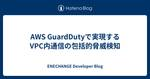
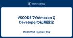

ENECHANGE Developer Blog
https://tech.enechange.co.jp/
ENECHANGE開発者ブログ
フィード

AWS GuardDutyで実現するVPC内通信の包括的脅威検知
ENECHANGE Developer Blog
CTO室のldrです🍒 VPC内通信の不正アクセスをリアルタイムで検知する仕組みをご紹介します。
8時間前

VSCODEでのAmazon Q Developerの初期設定
ENECHANGE Developer Blog
cto室のldrです。 Amazon Q Developerがvscodeで使用できるようになっているので初期設定をメモとして残します。
7日前

ALBを共用するとどれだけ安くなる？！実際にやって分かった開発環境コスト削減事例
ENECHANGE Developer Blog
ENECHANGE所属のエンジニア id:tetsushi_fukabori こと深堀です。 記事を書くのが年単位ぶりなので書き方も忘れていました。そうか文章ってこう書くんだったねって感じです。 年初から取り組んだ内容は久しぶりに技術ブログで共有すると価値がありそうだったので書くことにします。 相変わらず開発環境のコストをどうにか下げられないか、という話題です。 今回は2025年3-4月に実施した開発環境のインフラ構成変更と、それによるコスト削減を紹介します。 タイトルの通りALBをなんやかやしてコストを削減します。 サーバーが必要なWEBサービスを公開するとどうしてもどこかにロードバランサー…
14日前
AWSMCPServersをAmazonQとClaudeで比較してみた
ENECHANGE Developer Blog
cto室のldrです。 2025年3月31日にリリースされたAWSMCPServersをAmazonQとClaudeで比較した記事となります。 AmazonQ及びClaudeの利用開始方法については触れません。
1ヶ月前
ElastiCache for RedisをValkeyへ移行しました
ENECHANGE Developer Blog
エネルギークラウド事業部でバックエンドエンジニアをしている白坂です。 2024年10月から Amazon ElastiCache for Valkey が利用できるようになったため、私たちのチームでも Redis から Valkey への移行を行いました。 この記事ではその際につまずいたポイントをまとめます。
2ヶ月前
フロントエンドエンジニアだけどインフラ構築をやってみた
ENECHANGE Developer Blog
ENECHANGEの Yuto Ono です。普段はフロントエンド開発をメインでやっていますが、最近、新規プロダクト開発に伴い、 Terraform でのインフラ構築を経験しました。面白い経験ができたと感じたので、その時に感じたことを書いていきたいと思います。 AWSの資格取得で学んだことを実践できた Terraform の基礎が身についた Terraform Modules の偉大さを実感した CTO室の手厚いサポート さいごに AWSの資格取得で学んだことを実践できた 僕は2024年2月に、AWS Solutions Architect - Associate (SAA) という試験を受け…
2ヶ月前
Amazon ECRの拡張スキャンを始める前に知っておきたい設定ポイント2つ
ENECHANGE Developer Blog
CTO室の岩本 (@iwamot) です。 ENECHANGEでは、Amazon ECRの拡張スキャンを全社的に導入しました。OSパッケージの脆弱性のみが対象となる基本スキャンと違い、プログラミング言語パッケージも対象となります。 導入の狙いは、セキュリティの強化と開発者体験の向上です。古いバージョンのOSやプログラミング言語が使われつづけると、安全性だけでなく開発者のモチベーションまで低下してしまいかねません。 ただし実際に導入してみると、始める前に知っておきたかったポイントがありました。 この記事では、これからECRの拡張スキャンを使う方に向けて、とくに押さえておきたい2つの設定を紹介しま…
2ヶ月前
Terraform v1.11.0のS3 Native State Lockingについて
ENECHANGE Developer Blog
こんにちは、cto室のldrです。 Terraform v1.11.0でGAとなった機能の1つであるS3 Native State Lockingついて書きたいと思います。 v1.11.0 S3 native state locking is now generally available. The use_lockfile argument enables users to adopt the S3-native mechanism for state locking. As part of this change, we've deprecated the DynamoDB-related…
2ヶ月前
GitHub CI/CD実践ガイドの著者の記事を写経してグッドプラクティス11を学び、+1してみる
ENECHANGE Developer Blog
こんにちは、CTO室のldrです。 GitHub CI/CD実践ガイドの著者が提唱するグッドプラクティスを実践し、1つ追加してみました。 グッドプラクティス11 タイムアウトを常に指定する デフォルトシェルでBashのパイプエラーを拾う 「actionlint」ですばやく構文エラーをチェックする Concurrencyで古いワークフローを自動キャンセルする 不要なイベントで起動しないようにフィルタリングする 最安値のUbuntuランナーを優先する GITHUB_TOKENのパーミッションはジョブレベルで定義する アクションはコミットハッシュで固定する Bashトレーシングオプションでログを詳細…
2ヶ月前
JAWS DAYS 2025のセッション「開発組織を進化させる！ AWSで実践するチームトポロジー」で登壇しました
ENECHANGE Developer Blog
CTO室の岩本 (@iwamot) です。 2025年3月1日に開催されたJAWS DAYS 2025で「開発組織を進化させる！ AWSで実践するチームトポロジー」と題する発表をしました。 CfPに応募した理由は下記の通りです。 書籍『チームトポロジー』を読み、エンジニアリングでの迷いが減った AWSユーザーとしてENECHANGEで進めてきた取り組みが、チームトポロジーの考え方に（偶然にも）沿っていることに気づいた この経験を整理してシェアすれば、他のAWSユーザーの迷いも減らせるのではないかと考えた 発表後、聴いてくださった方から「チームトポロジー、読んでみます」「ちょうど進めようと思って…
2ヶ月前
Terraform v1.11.0のWrite-Only Attributesについて
ENECHANGE Developer Blog
こんにちは、cto室のldrです。 terraform v1.11.0がリリースされ、注目してた機能が実装されましたのでご紹介したいと思います。 新機能 書き込み専用属性の追加 プロバイダー側でリソースの属性を「書き込み専用」として指定できるようになりました。 terraform testのJUnit XML出力オプションの一般提供 terraform testコマンドに-junit-xmlオプションが利用可能になりました。 S3ネイティブ状態ロックの一般提供 S3を利用した状態ロック機能がuse_lockfile引数を使うことで有効化できるようになり、DynamoDB関連の引数は非推奨となり…
3ヶ月前
PyCon JP 2024参加レポート
ENECHANGE Developer Blog
ENECHANGEの白坂です。 2024年9月27日〜29日に開催されたPyCon JP 2024に参加してきたので、イベントの様子や印象に残ったセッションについてご紹介します。 ゴールドスポンサーになりました！ 印象に残ったセッション 5年分のツケを一気に払った話 Rustを活用したPythonライブラリの開発 WEBアプリケーションにおけるAWS Lambdaを用いた大規模な非同期処理の実践 最後に
3ヶ月前
現場で使えるライブラリアップデートの進め方
ENECHANGE Developer Blog
ENECHANGEの白坂です。普段はバックエンド開発をメインでしています。 今回の記事では、ライブラリアップデートの具体的な実施手順と、継続的にアップデートを実施していくための工夫を紹介します。 ライブラリアップデートはなぜ必要なのか？ ライブラリアップデートが必要な理由 1. 開発が止まるリスクを避けるため 2. 脆弱性に対応するため 3. 迅速に脆弱性に対応できるようにするため 4. ライブラリの新機能を使うため 脆弱性対応が遅れると発生するリスク Equifax社のデータ漏洩（2017年） Log4Shell（2021年） ライブラリアップデートどうやって進める？ 実施手順 1. 全ての…
5ヶ月前
AWSコスト監視システムを作ってみた
ENECHANGE Developer Blog
こんにちは、ENECHANGEの石橋です。 AWSのコストを管理することは、企業にとって非常に重要です。 本ブログでは、AWS Budgets, SNS, Chatbot, Event Bridge, Lambda, Slackを統合したコスト監視システムの開発について解説します。 TerraformやLambdaの実装例も提供しますので、ご参考になれば幸いです。
5ヶ月前
APIクライアントを OpenAPI Generator から Orval に移行してみた
ENECHANGE Developer Blog
ENECHANGEの Yuto Ono です。エンジニアリングマネージャーをしながら、フロントエンドの開発もしています。 最近、新たなプロジェクトが立ち上がり、フロントエンド、バックエンドともにTypeScriptで開発しています。TypeScript好きの僕にはたまらない環境で、楽しく開発しています。 フロントエンドは React + React Router、バックエンドは NestJS + Prisma を採用しており、フロントエンド・バックエンド間の通信には REST API を使用しています。NestJSの機能で OpenAPI 形式のファイルを出力し、ライブラリでフロントエンド側か…
5ヶ月前
あとで困らない！AWSマルチアカウント移行の前に2点のチェック
ENECHANGE Developer Blog
🎅「AWS Community Builders Advent Calendar 2024」12日目の記事です🎄 CTO室の岩本 (iwamot) です。現在CTO室では、AWS Organizationsによるマルチアカウント環境への移行に取り組んでいます。複数事業部の開発環境や本番環境が同じアカウントに混在していて、セキュリティにもコスト管理にも不都合だったためです。 今回初めてAWS Organizationsを使ってみて、困った点が2つありました。 スタンドアロンアカウントだった期間のコストデータにアクセスできなくなった クレジットカード払いから請求書払いに変えるのに時間がかかった こ…
5ヶ月前
CloudNative Days Winter 2024に実行委員として参加しました
ENECHANGE Developer Blog
CTO室の岩本 (iwamot) です。CTO室では、各事業部で開発しているアプリケーションのコンテナ化を横断的に支援しています。開始から1年半で、6割の環境がEC2からFargateに移行されました。今後も10割を目指して進めていきます。 CloudNative Days Winter 2024 (CNDW2024) というイベントはご存じでしょうか。名前のとおり、クラウドネイティブ技術を広める主旨のカンファレンスです。11月28日から2日間、東京・有明の会場とオンラインとのハイブリッドで開催されました。 event.cloudnativedays.jp そのCNDW2024に、ぼくは実行委…
5ヶ月前
ECS化・パフォーマンス改善・チャットボット活用。全社的な技術基盤の根幹を支える、CTO室の改善事例
ENECHANGE Developer Blog
ENECHANGE株式会社において、全社的な技術基盤を支えている部署がCTO室です。各部署のインフラの計画・導入や情報セキュリティの教育、さらには全社的な技術戦略の策定など、多岐にわたるIT基盤の整備を担当しています。CTO室が存在することにより、各部署はプロダクト開発に専念でき、かつ組織横断で技術の最適化やナレッジの共有が進みます。縁の下の力持ちとして、会社全体の技術的な成長を後押しする役割を果たしています。 今回は、CTO室に所属するVPoT兼マネージャーの岩本隆史とエンジニアの深堀哲史、常盤匠に、これまでCTO室が担ってきたプロジェクトの事例について聞きました。
6ヶ月前
テックベンチャー3社のインターン生が語る！学生エンジニアの本音とは【イベントレポート】
ENECHANGE Developer Blog
こんにちは、エンジニア採用担当の村上です！ 先日、STORESさん、マネーフォワードさん、ENECHANGEの3社から学生インターンに登壇いただき、「【Ruby】テックベンチャー3社のインターン生が語る！学生エンジニアの本音トーク」というテーマのオンラインイベントを開催しました。 その中での発表が非常に素晴らしかったので、皆様にもレポートをお届けします。 社会人と遜色ない高いレベルの業務に取り組み、スキルを磨かれており、またインターンとして働くことで「社会人として働く」ことに対する解像度も非常に高く持っている方ばかりで、私も非常に刺激を受けましたのでぜひ最後までご覧ください！
7ヶ月前
日本にはAWS Community Builderが足りていない
ENECHANGE Developer Blog
日本にはAWS Community Builderが足りていないので、目指すなら今がお勧めです。 AWS Community Builderに選ばれると、AWSのクレジットやグッズがもらえたり、新サービスや新機能の情報が早く得られたりするなど、さまざまなメリットがあります。 背景 筆者の岩本は、10月12日に開催されたJAWS FESTA 2024 in 広島に参加しました。日本のAWSユーザーグループ (JAWS-UG) が主催した、全国規模の交流イベントです。 そのイベントで「日本にはAWS Community Builderが足りていない」ことを知りました。AWSの沼口さんのセッションで…
7ヶ月前
初実施の「I/O DayオンラインLT大会」、その内容を大公開！
ENECHANGE Developer Blog
こんにちは。エンジニア採用担当の村上です！ 先日、新しい技術の習得と活用を促進するために始まった社内イベント「I/O Day」のアウトプットの場としてオンラインLT大会が開催されましたのでレポートをお届けします。 I/O Dayの起案者岩本さんへ、起案の背景や想いをお伺いしたインタビューも下記からご覧ください！ tech.enechange.co.jp
7ヶ月前
ブルー/グリーンなAmazon ECSサービスのネットワーク設定を変える方法
ENECHANGE Developer Blog
AWS CodeDeployでブルー/グリーンデプロイしているAmazon ECSサービスについて、もしネットワーク設定を変えたくなったら、AppSpecを編集したうえで、新しいデプロイメントをトリガーしましょう。 この方法を知らないと、ECSサービスをわざわざ作り直すか、ネットワーク変更をあきらめるか、どちらかになってしまいます。
7ヶ月前
React 19 RC で、アンケート画面を作ってみた
ENECHANGE Developer Blog
ENECHANGEの Yuto Ono です。エンジニアリングマネージャーをしながら、フロントエンドの開発もしています。 2024年4月に、React 19 Beta がリリースされました。2024年9月現在、 React 19 はRC版となっており、正式リリース間近となっております。そこで、早めに React 19 の新機能をキャッチアップし、正式リリース時にスタートダッシュをきれるようにしたいと思いました。 最近、実務でアンケート機能の実装をしていることもあり、このようなアンケートアプリケーションを作ってみました。React 19 の機能をふんだんに使ってみましたので、その解説を書いていこ…
7ヶ月前
IPAとAWSのダブル全冠、鍵は体力とお金
ENECHANGE Developer Blog
すべての情報処理技術者試験に合格するには「体力」が、すべてのAWS認定資格を取得するには「お金」が、それぞれ最大の鍵です。 鍵が分かれば、効率よくダブル全冠が狙えます。相手を知らずに戦うのは非効率です。 ダブル全冠が達成できれば、エンジニアとしての市場価値が高まります。レアだからです。現時点の達成者は多くて数百人でしょう。 背景 筆者の岩本は2021年にIPA全冠を、また本日、AWS全冠を達成しました。 その経験で気づいた戦い方をお伝えし、参考になればと思っています。
8ヶ月前
CloudTrailとCloudWatchLogsの統合
ENECHANGE Developer Blog
概要 CloudTrailはCloudWatchLogsと統合できるため、CloudWatchを利用して改ざんや不正アクセスに関連する疑わしいイベントを検出できます。 検知条件の策定 セキュリティと運用の観点から合理的かつ包括的なアプローチを取るためにターゲットは下記としました。 CloudTrail AWS全体の監査基盤であり、これ自体の設定変更を監視することは、AWSリソース全体の監視に直結します。 S3 重要なデータの保管場所であり、機密データの改ざんやアクセス制御の変更を監視することでデータの保護を強化できます。 闇雲に指定しても意味ないので、下記要件を1つでも満たすものを対象とした。…
8ヶ月前
「今さら聞けない！オフィス・開発でのAI活用」イベントレポート
ENECHANGE Developer Blog
こんにちは。人事室の村上です。 先日弊社オフィスにて「今さら聞けない！オフィス・開発でのAI活用」をテーマにイベントが開催されました！ 主催は「うら原アジャイルコミュニティ」で、弊社は共催として参加しました。 オフライン・オンラインの同時開催で、それぞれ10名以上の方にご参加いただき、当日も盛り上がっていましたので本記事ではレポートをお届けしたいと思います。
8ヶ月前
IPアドレス制限ありのURLをRoute 53ヘルスチェックで死活監視する
ENECHANGE Developer Blog
VPoT兼CTO室マネージャーの岩本 (iwamot) です。プレイヤーとしては、おもにクラウド運用を担当しています。 先日「IPアドレス制限のあるURLを死活監視したい」と同僚から相談され、Amazon Route 53ヘルスチェックによる監視を実装しました。 シンプルな実装ですが、工夫した点もあるため、事例として共有します。
8ヶ月前
Amazon S3 が条件付き書き込みのサポートを開始
ENECHANGE Developer Blog
Amazon S3における条件付きリクエストの活用 特定の条件が満たされた場合にのみオブジェクトのアップロードや更新を許可する機能です。競合の防止やデータの整合性を確保するために使用できます。 https://aws.amazon.com/jp/about-aws/whats-new/2024/08/amazon-s3-conditional-writes/
8ヶ月前
ALB脆弱性の影響と対策
ENECHANGE Developer Blog
結論 サービスがIdpと連携していたとしてもALBが認証プロバイダーと連携してトークンの検証を行っていない場合、ALBeast脆弱性の影響はありません。 概要 https://www.miggo.io/resources/uncovering-auth-vulnerability-in-aws-alb-albeast 攻撃者は正規のトークンを模倣した不正に署名されたトークンを生成し、本脆弱性を悪用すると、ALBがこの不正トークンを正しく検証せずに受け入れてしまう。 その結果、Idpとの連携システムであっても発行した正規のトークンがなくても、攻撃者は偽のトークンで認証を通過できる可能性があるため…
9ヶ月前
JAWS PANKRATION 2024に登壇して得られたもの
ENECHANGE Developer Blog
VPoTの岩本 (iwamot) です。 8月24日から25日にかけて、AWSタイトルホルダーやAWS内の方が登壇しつづける24時間オンラインイベント「JAWS PANKRATION 2024」が開催されました。 jawspankration2024.jaws-ug.jp ぼくは24日の23:20 (JST) から「Cost-Effective SLO Error Budget Monitoring with Athena and CloudWatch」のタイトルで登壇しました。 発表した内容については、スライドや、後日公開予定のアーカイブ動画をご覧いただければ幸いです。 今回の記事では、登壇…
9ヶ月前